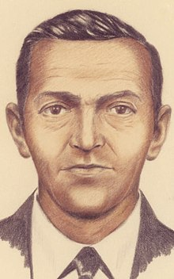

D.B. Cooper, also known as Dan Cooper, is the alias of the man notorious for committing not only one of the greatest mysteries in the history of aviation and criminal investigations in the United States,
but possibly the world. On this website, we'll look at what happened, the investigation, and the legacy left behind from the incident that took place over 50 years ago...
Described as being in his mid-40s and wearing a dark suit, a tie, and a raincoat, a man purchased a ticket under the name Dan Cooper and boarded Northwest Orient Airlines Flight 305, a Boeing 727. The ticket was for a single flight from Portland, Oregon to Seattle, Washington. The people on the plane included 36 passengers and 6 crew members. Cooper sat in the last row of the plane in the middle seat on the right side of the cabin. As Flight 305 departed, he ordered a drink, smoked a cigarette, then handed an envelope with a note to a flight attendant, which read:
"I have a bomb here and I would like you to sit by me."
When the flight attendant sat next to Cooper, he opened his briefcase to show her 8 sticks of dynamite hidden inside of it. He than proceed to give her his lists of demands, which included:
The first flight attendant went to alert the pilots of what was going on while a second attendant sat next to Cooper with the telephone in the rear cabin to act as an intermediary between the pilots, crew members, and Cooper. Flight 305 circled around Seattle-Tacoma Airport for over 90 minutes while local and federal authorities gathered the ransom money and parachutes he requested as quickly as possible. Once his demands were gathered, the plane finally landed on the tarmac at 5:45 pm. While one of the flight attendants gathered the money and parachutes, Cooper allowed the passengers and 2 of the flight attendants to unboard. With the remaining 4 crew members, Cooper instructed the pilots to fly to Mexico City with certain parameters in place. The parameters were that:
After consideration from the pilots, they agreed that the journey to Mexico City would not be possible given the previous parameters, so Cooper agreed to a refueling in Reno, Nevada. As well, the aft stairway could not stay open through the entriety of the trip, so he reluctantly agreed to be taught to open it so he could do so at his choosing. After complications with refueling the plane, it departed from Seattle-Tacoma Ariport at around 7:36 pm. Once the plane was in the air, Cooper instructed the remaining flight attendant to secure herself in the cockpit with the 2 pilots and the other crew member. He was last seen standing in the middle of the aisles, as if he was preparing to jump. When flight 305 landed in Reno 3 hours later, Cooper was nowhere to be found onboard, and the opened aft stairway had been damaged upon landing. The only possible explanation was that at some point between Seattle and Reno, Cooper jumped from the Boeing 727 into the cold, pitch black abyss.

When the crew realized they were the only ones left aboard, FBI agents quickly swarmed the plane to begin looking for evidence to find out who exactly "Dan Cooper" was. However, FBI agents quickly came to realize that there was hardly any evidence.